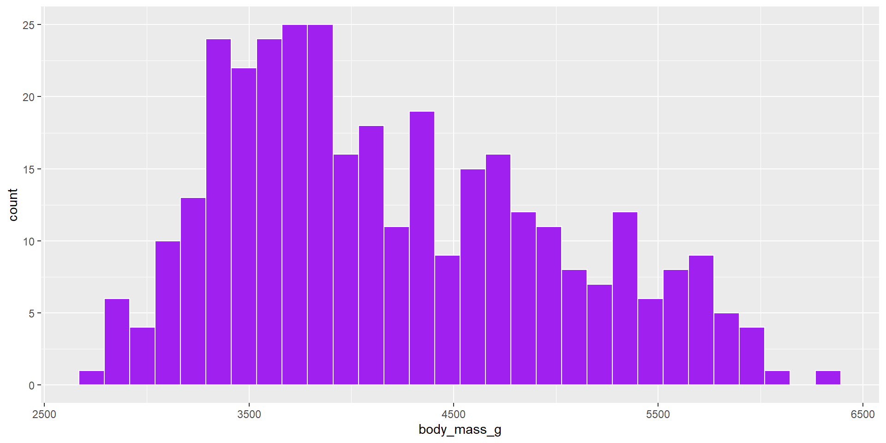
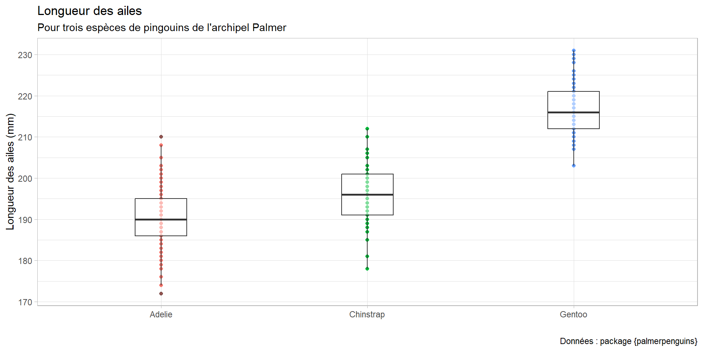
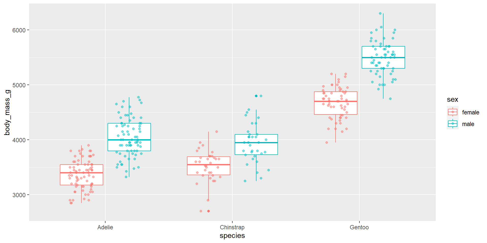

Les ateliers codons
Des créneaux réguliers pour découvrir et progresser
Deux parcours : initiation et perfectionnement
Une équipe d’animation
Des supports disponibles en ligne : ateliers-codons.netlify.app/
Sources pour cet atelier :
R Course TU Dresden (Cédric Scherer)
Le workflow en Data Science, adapté de “R for Data Science”
Le workflow en Data Science, adapté de “R for Data Science”
Visualisation de données avec {ggplot2}
{ggplot2} est un outil de création de graphiques basé sur la “grammaire des graphiques” (Wilkinson, 2005).
Vous fournissez les données, vous dites à {ggplot2} comment associer des variables à des paramètres esthétiques, quels types de représentation utiliser, et {ggplot2} s’occupe des détails.
Avantages de {ggplot2}
approche “code en premier” ➝ workflow reproductible et transparent
la “grammaire des graphiques” sous-jacente est cohérente
très flexible, principe de couches pour ajouter des éléments
système de thèmes pour polir l’apparence du graphique
beaucoup de fonctionnalités supplémentaires grâce à des packages
communauté en ligne très active et prête à aider

Illustration de Allison Horst

Illustration de Allison Horst

Sélection de visualisations créées entièrement avec ggplot2 par Thomas Lin Pedersen, Georgios Karamanis, Timo Gossenbacher, Torsten Sprenger, Jake Kaupp, Jack Davison et Cédric Scherer
{ggplot2}
Le package {ggplot2}
… est un package R de visualisation de données créé par Hadley Wickham en 2005
… fait partie du {tidyverse}
La grammaire des graphiques
La grammaire de {ggplot2}
| Composante | Fonction | Explication |
|---|---|---|
| Données | ggplot(data) |
Les données à visualiser |
| Esthétique | aes() |
Apparence esthétique (position, couleur, forme, taille, …) |
| Objets géométriques | geom_*() |
Formes géométriques utilisées pour représenter les données (points, lignes, barres, …) |
| Thème | theme_*() |
Apparence globale du graphique (arrière-plan, quadrillage, …) |
Le jeu de donn√©es penguins üêß
Données collectées et publiées par Dr Kristen Gorman lors d’une étude menée dans la Palmer Station en Antarctique, appartenant à la LTER (Long Term Ecological Research Network).
Mesure de différents paramètres (par exemple la longueur des ailes, la masse corporelle) chez 342 individus appartenant à 3 espèces de pingouins vivant sur 3 îles de l’archipel Palmer.
Deux jeux de données :
données brutes (
penguins_raw)données nettoyées (
penguins)
Données disponibles dans un package R :
{palmerpenguins}.
| Variable | Description | Classe |
|---|---|---|
| species | espèce de pingouin (Adelie, Chinstrap et Gentoo) | Facteur |
| island | île de l’archipel Palmer, en Antarctique (Biscoe, Dream ou Torgersen) | Facteur |
| bill_length_mm | longueur du bec (mm) | Nombre décimal |
| bill_depth_mm | hauteur du bec (mm) | Nombre décimal |
| flipper_length_mm | longueur de l’aile (mm) | Nombre entier |
| body_mass_g | masse corporelle (g) | Nombre entier |
| sex | sexe du pingouin (mâle ou femelle) | Facteur |
| year | année de l’étude (2007, 2008 ou 2009) | Nombre entier |
Concepts fondamentaux
ggplot2::ggplot()
Données

Esthétique
= “mapping” de paramètres esthétiques sur des variables
position (
x,y)couleur (
coloroucolour,fill)forme (
shape,linetype)taille (
size)transparence (
alpha)groupes (
group)
Esthétique

Esthétique

Esthétique

Esthétique
Objets géométriques
= représenter les données grâce à des formes géométriques
points
lignes
polygones
texte
…
Scatter plot
geom_point()

Propriétés visuelles des couches
Propriétés visuelles : fixées ou “mappées” ?
Mise en pratique - geom_point()
Créez un nuage de points en utilisant les variables suivantes :
x =
bill_length_mmy =
bill_depth_mm
Testez différentes formes de points (valeurs numériques entre 0 et 21)
Testez différentes tailles de points
Mappez la variable
speciessur la couleur des pointsMappez (en plus de l’étape précédente) la variable
body_mass_gsur la taille des points
Mise en pratique - geom_point()

Mise en pratique - geom_point()
Mise en pratique - geom_point()
Mise en pratique - geom_point()
geom_point()
L’argument shape peut prendre les valeurs numériques suivantes :
Source : Albert’s blog
geom_point()
Pour les formes 21 à 25, deux éléments peuvent être colorés :
le contour (avec
color = …)l’intérieur (avec
fill = …)
Pour ces formes, l’épaisseur du contour peut être modifiée avec l’argument stroke = …
geom_point()
Propriétés visuelles : globales ou locales ?

Histogramme
geom_histogram()
geom_histogram()

geom_histogram() - bins & binwidth
`stat_bin()` using `bins = 30`. Pick better value with `binwidth`.Warning: Removed 2 rows containing non-finite values (`stat_bin()`).
bins = …permet de définir le nombre de classes (par défaut 30)binwidth = …permet de définir la largeur de chaque classe (unités définies par la variable représentée)
geom_histogram() - bins & binwidth
geom_histogram() - couleurs mappées
Mise en pratique - geom_histogram()
Représentez à l’aide d’un histogramme la distribution de la variable
flipper_length_mmChoisissez une couleur faciltant la lecture de la figure
Mappez la variable
speciessur la couleur de l’histogrammeModifiez les paramètres suivants :
Nombre de classes
Largeur des classes
Mise en pratique - geom_histogram()
Mise en pratique - geom_histogram()
Boxplot
geom_boxplot()
geom_boxplot()
geom_boxplot() - supprimer la légende
Dans le cas présent, les noms d’espèces sont suffisamment différenciés (noms sur l’axe x + couleurs) pour se passer de la légende.
Pour supprimer la légende d’une figure, utilisez l’argument show.legend = FALSE.
Mise en pratique - geom_boxplot()
Représentez à l’aide d’un boxplot la variable
bill_depth_mmen fonction de l’espèceMappez la variable
speciessur la couleur de contour des boîtesSupprimez la légende
Mise en pratique - geom_boxplot()
Barplot
geom_bar()

geom_bar()
geom_bar()

geom_bar() versus geom_col()
Les objets géométriques geom_bar() et geom_col() permettent de créer des diagrammes en barres :
avec
geom_bar(), la hauteur des barres est proportionnelle au nombre d’observations de chaque groupeavec
geom_col(), la hauteur des barres représente des valeurs existant des les données
geom_bar() versus geom_col()

geom_bar() versus geom_col()
Mise en pratique - geom_bar() versus geom_col()
Représentez à l’aide de la fonction
geom_bar()le nombre d’individus observés par îleReprésentez à l’aide de
geom_col()la moyenne de la masse en kg en fonction de l’espèce.- Pensez à utiliser la fonction
summarise()
- Pensez à utiliser la fonction
Mise en pratique - geom_bar() versus geom_col()
Mise en pratique - geom_bar() versus geom_col()
Titres
labs()
{ggplot2} génère automatiquement des titres pour les axes, en fonction des noms des variables représentées.
labs() permet de modifier ou supprimer ces titres, ainsi que d’ajouter au graphique :
un titre
un sous-titre
une note
labs()
penguins |>
ggplot(aes(x = flipper_length_mm,
y = bill_length_mm,
color = species)) +
geom_point() +
labs(x = "Longueur de l'aile (mm)",
y = "Longueur du bec (mm)",
title = "Longueur de l'aile et du bec",
subtitle = "chez 3 espèces de pingouins de l'archipel Palmer",
caption = "Source : package {palmerpenguins}")labs()
labs() et légende
labs() vous permet également de modifier le titre d’une légende :
Mise en pratique - labs()
A l’aide d’un barplot, représentez le nombre d’individus par espèce
Utilisez les couleurs suivantes :
variable
speciesmappée sur la couleur de remplissage des barresnoir pour le contour des barres
Ajustez la largeur des barres
Ajoutez un titre, un sous-titre, une note et des titres aux axes du graphique
Mise en pratique - labs()
Thèmes
theme_*()
Huit thèmes sont prédéfinis dans {ggplot2} et permettent de modifier l’apparence générale d’un graphique :
theme_gray()- le thème par défauttheme_bw()theme_classic()theme_dark()theme_light()theme_linedraw()theme_minimal()theme_void()
theme_*()
Pour utiliser l’un des thèmes prédéfinis :
theme_gray()
theme_bw()
theme_classic()
theme_dark()
theme_light()
theme_linedraw()
theme_minimal()
theme_void()
Superposer des couches
Combiner des objets géométriques
{ggplot2} permet de combiner différentes représentations visuelles sur un même graphique :
geom_smooth()
La fonction geom_smooth() permet d’ajouter une droite de régression linéaire à un nuage de points :

Couleur : encodage global ou local ?

Le paramètre group
Ecraser les paramètres globaux
Mise en pratique - superposer des couches
Représentez à l’aide d’un scatter plot la longueur de l’aile en fonction de l’espèce
Mappez la variable
speciesà la couleur des pointsAjouter des boxplots au graphique (sans leur associer de couleur)
Utilisez le paramètre
alphapour rendre le graphique plus lisibleAjustez la largeur des boxplots
Ajoutez des titres et choisissez un thème
Mise en pratique - superposer des couches
penguins |>
ggplot(aes(x = species, y = flipper_length_mm)) +
geom_point(aes(color = species),
show.legend = FALSE) +
geom_boxplot(alpha = 0.5,
width = 0.25) +
labs(title = "Longueur des ailes",
subtitle = "Pour trois espèces de pingouins de l'archipel Palmer",
caption = "Données : package {palmerpenguins}",
x = "",
y = "Longueur des ailes (mm)") +
theme_light()Mise en pratique - superposer des couches

Couleurs
Les couleurs dans R
Dans R, les couleurs peuvent se préciser de trois manières :
par leur nom
par leur code hexadécimal
par leur code RVB
La fonction colors() permet d’afficher la liste de toutes les couleurs existantes.
Les couleurs dans R
Les palettes
R dispose de plusieurs palettes de couleurs (discrètes ou continues) :

Les palettes
Les fonctions suivantes permettent d’utiliser une palette de couleurs :
scale_color_brewer(palette = …)s’appliquera au paramètrecolordes objets géométriquesscale_fill_brewer(palette = …)s’appliquera au paramètrefilldes objets géométriques
Les palettes
Définir les couleurs
Vous pouvez définir manuellement les couleurs :
en créant un vecteur de couleurs avec les valeurs associées
en appelant ce vecteur dans la fonction
scale_*_manual
Définir les couleurs
Définir les couleurs

Mise en pratique - couleurs
Représentez la longueur du bec en fonction de la hauteur du bec
Mappez la variable
speciesà la couleur des pointsAjustez la taille et la transparence des points pour rendre le graphique plus lisible
Utilisez les couleurs suivantes :
#D81B60 pour Adelie
#1E88E5 pour Chinstrap
#FFC107 pour Gentoo
Mise en pratique - couleurs
Mise en pratique - couleurs
L’argument position
L’argument position
L’argument position
L’argument position
L’argument position
Mise en pratique - l’argument position
Représentez à l’aide de boxplots la masse en fonction de l’espèce
- supprimez les données manquantes à l’aide de
drop_na()
- supprimez les données manquantes à l’aide de
Mappez le sexe à la couleur
Ajoutez des nuages de points
Utilisez
position = position_jitterdodge()pour séparer les nuages de pointsAjustez la transparence des points pour rendre le graphique plus lisible
Mise en pratique - l’argument position
Mise en pratique - l’argument position

Exporter un graphique
Exporter un graphique
Pour exporter un graphique, il existe deux possibilités :
exporter directement depuis l’onglet Plots
utiliser la fonction
ggsave()
Depuis l’onglet Plots
Quand vous exécutez le code permettant de créer un graphique, celui-ci s’affiche dans l’onglet Plots.
En cliquant sur Export, trois options vous sont proposées :
Save as Image…
Save as PDF…
Copy to Clipboard…
En choisissant Save as Image… vous pouvez modifier les dimensions du graphique, choisir le format de fichier (.png, .jpeg, …) et l’emplacement de sauvegarde.
ggsave()
La fonction ggsave() permet d’exporter une figure :
- stockez le code de la figure dans un objet
- exportez l’objet
L’argument dpi désigne la résolution en pixels.